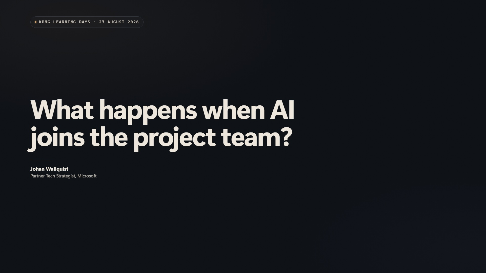
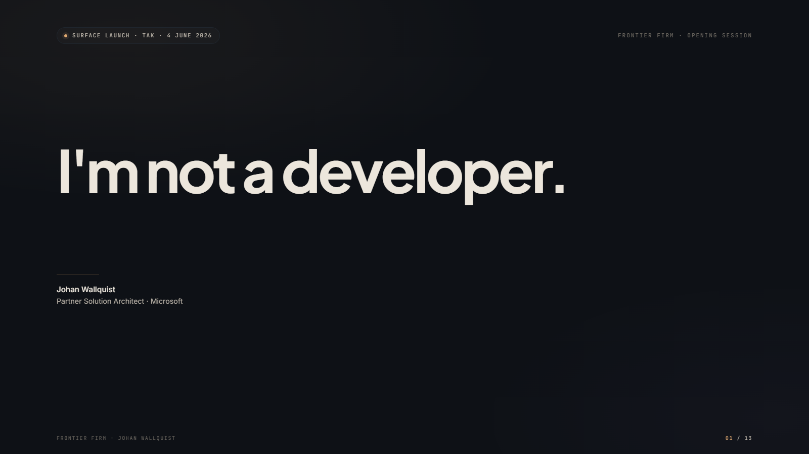
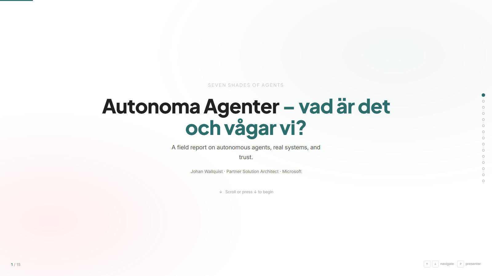

What happens when AI joins the project team?
Consulting delivery changes when agents work across the assignment. The volume moves to the machine. Judgment, evidence quality, and the recommendation stay with the consultant.
Public decks and working material Open the talk. Follow the argument. Use the presenter view or storyboard when you want to understand how it was built.

Consulting delivery changes when agents work across the assignment. The volume moves to the machine. Judgment, evidence quality, and the recommendation stay with the consultant.

A field report on how people and agents work together, what changes inside the organization, and what the audience can try immediately.

Seven levels of agentic work, from familiar assistance to systems that keep operating. The hard part is deciding when trust has been earned.
Each overview image is captured from the current talk source and checked in beside it. When a title slide changes, the thumbnail must change in the same commit. No separate photo library.